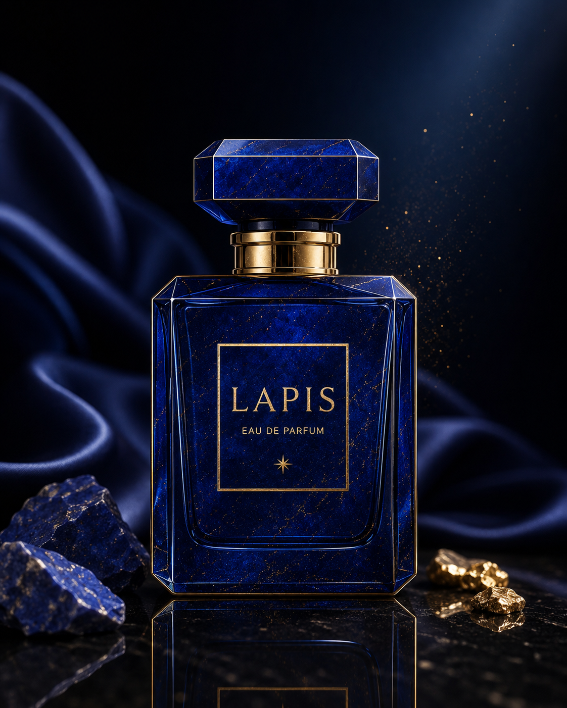
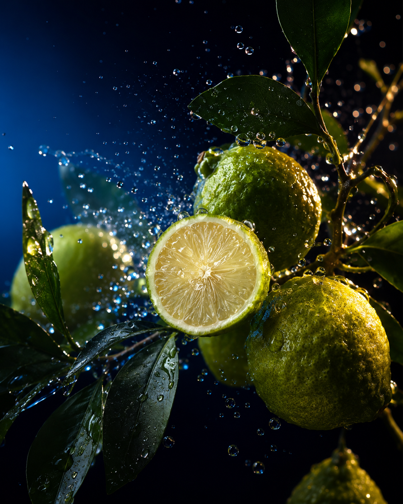

Brand Story
고요가
가장 짙은 색이 될 때
라피스라줄리는 한때 금보다 귀했습니다. 갈아서 얻은 푸름은 성당의 천장과 초상의 옷깃에만 허락되었죠.
LAPIS는 그 절제된 사치를 향으로 옮깁니다. 크게 말하지 않아도 남는 것, 그것이 우리가 생각하는 우아함입니다.
깊고 푸른 우아함
한 방울의 푸름이
공기의 결을 바꿉니다.

Brand Story
라피스라줄리는 한때 금보다 귀했습니다. 갈아서 얻은 푸름은 성당의 천장과 초상의 옷깃에만 허락되었죠.
LAPIS는 그 절제된 사치를 향으로 옮깁니다. 크게 말하지 않아도 남는 것, 그것이 우리가 생각하는 우아함입니다.
Notes

베르가못 · 핑크페퍼
문을 열자마자 스치는 첫인상. 차갑고 짧습니다.
아이리스 · 자스민
체온을 만나 피어나는 중심. 가장 오래 머뭅니다.
샌달우드 · 앰버
떠난 뒤에 남는 잔향. 기억이 되는 층입니다.
Philosophy
01
더할 것이 없을 때가 아니라, 뺄 것이 없을 때 완성됩니다.
02
향은 시간을 이기지 못합니다. 그래서 시간을 설계합니다.
03
기억되는 향은 크게 말한 적이 없습니다.
Contact
새로운 컬렉션과 비공개 초대를 가장 먼저 전해드립니다.